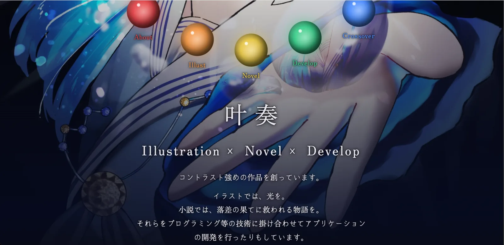
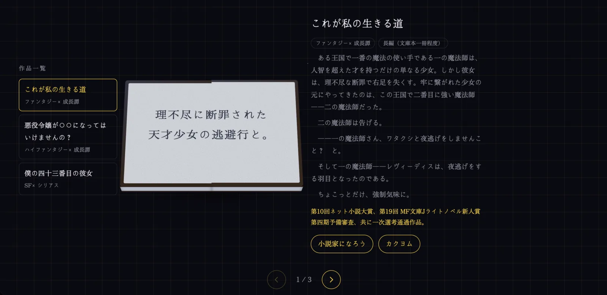

  叶奏の備忘録 叶奏の個人HP。細かい内容や工夫点等についてはすでに味わってきていると思われるため、省略します。これまでに感じた全てがこのHPです。 使用技術HTML / CSS / JavaScript / GitHub Pages 公開ページhttps://kanakana1118.github.io/ GitHubkanakana1118/kanakana1118.github.io